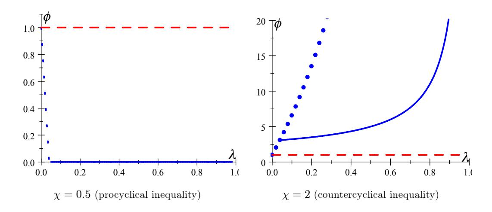
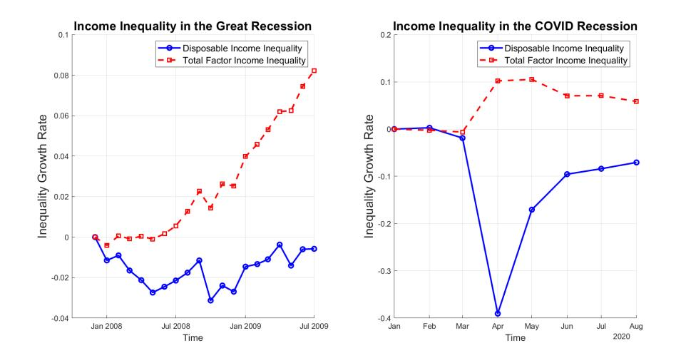

Heterogeneous Agent Macroeconomics
A Tractable New Keynesian Framework
Florin O. Bilbiie
University of Cambridge & CEPR
Forthcoming, MIT Press
First version 2019, this version November 2025
Chapter 41
Preliminary and Incomplete. Comments Requested
© Florin O. Bilbiie 2019
Chapter 4: Risk and Precautionary Saving: THANK, A Tractable Heterogeneous-Agent New Keynesian Model
The TANK model introduced in the previous chapter allows us to replicate a number of the key features of richer HANK models. However, by construction, the model does not feature idiosyncratic risk or self-insurance. In this chapter, we will introduce a Tractable Heterogeneous Agent New Keynesian (THANK) model—a simple two-state, two-asset model—which extends TANK and can capture this channel and quantify its importance. We will then use the model to conduct a full New Keynesian analysis, covering determinacy, the forward guidance puzzle, and the amplification or dampening of shocks.
Ingredients of the Two-State, Two-Asset THANK Model
As in TANK, the THANK model features two states. Households are either hand-to-mouth (H) or savers (S). The model introduces idiosyncratic uncertainty in a tractable form by allowing households to switch between states following an exogenous Markov transition matrix given by: \[ \begin{pmatrix} h & 1-h \\ 1-s & s \end{pmatrix}. \]
A hand-to-mouth household remains hand-to-mouth in the next period with probability h, and becomes a saver with probability 1 − h. A saver becomes hand-to-mouth next period with probability 1 − s, and remains a saver with probability s. We will assume that the economy has arrived at a stationary distribution such that the unconditional probability of being hand-to-mouth is equal to: \[ \lambda = \frac{1-s}{2-s-h}. \]
To keep the model tractable, we adopt the exact same combination of assumptions used in Bilbiie, which follows within the seminal monetary-theory tradition of Lucas (1990) and Shi (1997).2 The households have full insurance within type. However, they have access to only limited insurance across types. Households of different types can be thought of as populating different ‘islands’. At the beginning of each period, the family head—maximizing a utilitarian equally-weighted intertemporal welfare of all households facing limits to risk sharing—pools the resources on the island and makes the optimal consumption-savings choice for the households. After the portfolios have been chosen, the idiosyncratic uncertainty is realised, and the households move between islands.
There are two assets in the economy. Firstly, households can save in one-period bonds. These bonds are liquid in the sense that households can take bonds with them when they move across islands. Hence, bonds can be used to self-insure against idiosyncratic risk. Conversely, the shares in monopolistic firms are held only by S households. They are illiquid and cannot be used to self-insure.3 We will initially consider a zero-liquidity model in which bonds are priced but not traded. Nevertheless, the presence of bonds will still be essential in the model to capture the precautionary saving motive of the households.
The bond flows across islands can be summarised by the following equations, where \(B^j_{t+1}\) denotes the bonds held on island \(j\) at the beginning of period \(t + 1\) after the uncertainty is realised, and \(Z^j_{t+1}\) denotes the bonds chosen by households on island \(j\) at the end of period \(t\) before the uncertainty is realised: \[\begin{aligned}\underbrace{(1-\lambda)B^S_{t+1}}_{\text{Bonds on island S}} &= \underbrace{s(1-\lambda)Z^S_{t+1}}_{\text{Bonds chosen by S who remain S}} + \underbrace{(1-h)\lambda Z^H_{t+1}}_{\text{Bonds chosen by H who become S}}\\ \underbrace{\lambda B^H_{t+1}}_{\text{Bonds on island H}} &= \underbrace{h\lambda Z^H_{t+1}}_{\text{Bonds chosen by H who remain H}} + \underbrace{(1-s)(1-\lambda)Z^S_{t+1}}_{\text{Bonds chosen by S who become H}} \end{aligned}\] Rescaling and using the definition of \(\lambda\) yields: \[\begin{aligned} B_{t+1}^{S} &= sZ_{t+1}^{S} + (1-s)\lambda Z_{t+1}^{H}\\ B_{t+1}^{H} &= hZ_{t+1}^{H} + (1-h)Z_{t+1}^{S}. \end{aligned}\]
Family (Head) Optimisation
When resources are pooled within types, the problem of the family head is to choose consumption and savings to maximise utility subject to the budget constraints, the laws of motion for bonds derived above, and the no-borrowing condition.
\[\begin{aligned} W(B_t^S, B_t^H, \Theta_t) &= \max_{C_t^S, Z_{t+1}^S, \Theta_{t+1}, C_t^H, Z_{t+1}^H} (1 - \lambda) U(C_t^S) + \lambda U(C_t^H) + \beta E_t W(B_{t+1}^S, B_{t+1}^H, \Theta_{t+1}) \\ \text{subject to:}\\ C_t^S + Z_{t+1}^S + v_t \Theta_{t+1} &= Y_t^S + R_t B_t^S + \Theta_t (v_t + D_t) \\ C_t^H + Z_{t+1}^H &= Y_t^H + R_t B_t^H \\ B_{t+1}^S &= s Z_{t+1}^S + (1 - s) \lambda Z_{t+1}^H \\ B_{t+1}^H &= h Z_{t+1}^H + (1 - h) Z_{t+1}^S \\ Z_{t+1}^S, Z_{t+1}^H &\geq 0. \end{aligned}\]
The first-order conditions of the maximisation resemble those of the standard Bewley-Aiyagari-Huggett class of heterogeneous agent models. The Kuhn-Tucker conditions for the choice of illiquid shares are: \[U'(C_t^S) \ge \beta E_t \left\{ \frac{v_{t+1} + D_{t+1}}{v_t} U'(C_{t+1}^S) \right\}\] and \(\Theta_{t+1} = \Theta_t = (1 - \lambda)^{-1}\).
The Kuhn-Tucker conditions for the S and H saving decisions are: \[\begin{aligned} U'(C_{t}^{S}) &\geq \beta E_{t} \left\{ R_{t+1}[sU'(C_{t+1}^{S}) + (1-s)U'(C_{t+1}^{H})] \right\}\\ \mathrm{and}\quad 0 &= Z_{t+1}^{S}\left[U'(C_{t}^{S}) - \beta E_{t} \left\{ R_{t+1}[sU'(C_{t+1}^{S}) + (1-s)U'(C_{t+1}^{H})] \right\}\right]\\ U'(C_{t}^{H}) &\geq \beta E_{t} \left\{ R_{t+1}[(1-h)U'(C_{t+1}^{S}) + hU'(C_{t+1}^{H})] \right\}\\ \mathrm{and}\quad 0 &= Z_{t+1}^{H}\left[U'(C_{t}^{S}) - \beta E_{t} \left\{ R_{t+1}[(1-h)U'(C_{t+1}^{S}) + hU'(C_{t+1}^{H})] \right\}\right]. \end{aligned}\]
We will focus on equilibria in which H households choose not to save in bonds (\(Z^H_{t+1} = 0\)) such that the first-order condition for H holds with strict inequality. This could be due, for example, due to a negative shock to \(\beta\) for the H households such that they value the future sufficiently little to justify zero savings. As a result, H households have a unit MPC out of their income, and the bonds are priced by S households according to the self-insurance Euler equation: \[(C_t^S)^{-\frac{1}{\sigma}} = \beta E_t \left\{ (1+r_t) \left[ s(C_{t+1}^S)^{-\frac{1}{\sigma}} + (1-s)(C_{t+1}^H)^{-\frac{1}{\sigma}} \right] \right\}.\] The probability (\(1 − s\)) represents the idiosyncratic income risk facing the savers. Hence, they wish to save not only for intertemporal substitution but to smooth consumption over different states. This additional motive is the precautionary saving motive. This is not present in the TANK model, where households do not face idiosyncratic risk (\(s = 1\)).
Income Inequality and Risk: Cyclicality4
An important part of the THANK model is the distinction between income inequality and income risk. Income inequality can be defined as the ratio of the incomes of the two types of households: \[\Gamma_t(Y_t) \equiv \frac{Y_t^S}{Y_t^H},\] a concept closely related to inequality measures such as the Gini coefficient or generalised entropy.
Income risk in the model stems from the risk of becoming hand-to-mouth, given by the probability \(1−s\). To introduce cyclical income risk, we can allow this probability to vary with future aggregate income: \[1 - s(Y_{t+1}).\] Defining the derivative of \(s(Y_{t+1})\) as \(s^Y\), the derivative of \(1 − s(Y_{t+1})\) with respect to output is given by \(−s^Y\). Therefore, when \(s^Y > 0\), risk is countercyclical as the probability of becoming hand-to-mouth falls when aggregate income rises. When \(s^Y < 0\), risk is procyclical.
The THANK model gives a simple analytical expression for the conditional variance of income, which is often used as a measure of income risk in the literature. Conditional on being a saver today, the variance of log income is given by: \[\text{var}(\ln Y_{t+1}^S | \ln Y_t^S) = s(Y_{t+1})(1 - s(Y_{t+1}))(\ln \Gamma_{t+1})^2.\]
The cyclicality of this object can be found by taking the derivative with respect to output: \[\frac{d(\text{var})}{dY} = \frac{1-s}{Y} \left\{ \underbrace{\frac{-s_Y}{1-s} (2s-1)(\ln \Gamma)^2}_{\text{pure risk, skewness}} + \underbrace{\frac{\Gamma_Y Y}{\Gamma} s \ln(\Gamma)^2}_{\text{inequality}} \right\}.\]
As shown above, the cyclicality of income risk can be separated into two components. The first term is the component which stems from pure risk, or the skewness of the distribution. When \(s > \frac{1}{2}\), the risk of becoming hand-to-mouth is in the left tail - there is negative skewness. If \(s^Y > 0\), then the probability of becoming hand-to-mouth falls during an expansion and rises during a recession. This would lead to a negative first component, indicating that pure risk is countercyclical. The second term relates to the cyclicality of income inequality (which is captured by \(\chi − 1\)). When \(\Gamma^Y < 0\), income inequality is countercyclical. This leads to income risk becoming more countercyclical and the income of hand-to-mouth consumers moves more than one-for-one with aggregate income in recessions and expansions.
It is important to note a few key properties of the cyclicality of income risk. Firstly, when \(s = 1\), there is no income risk. This is the case in the TANK model, where households cannot move between states. There is also no income risk when \(s = 0\). Here, households simply oscillate between states, leading to a stationary mass \(\lambda = \frac{1}{2}\). When \(\Gamma = 1\), there is no inequality in the level of income, and income risk is acyclical up to a first-order approximation. When inequality is acyclical \(\Gamma^Y = 1\), the second channel will not operate and income risk cyclicality will be driven entirely by the pure risk component. Conversely, when \(s^Y = 0\), the pure risk component will not operate and income risk cyclicality will be determined by the inequality channel.
Aggregate Demand in THANK
The remainder of the THANK model is the same as in the TANK model studied in the previous chapter. Taking the model with zero liquidity and constant transition probabilities (\(s^Y = 0\)) and loglinearising around the steady state with zero profits yields the same equations for the consumption of each household type: \[\begin{aligned} c_t^H &= \chi y_t\\ c_t^S &= \frac{1 - \lambda \chi}{1 - \lambda} y_t. \end{aligned}\] Loglinearising the self-insurance Euler equation yields: \[c_t^S = sE_t c_{t+1}^S + (1-s)E_t c_{t+1}^H - \sigma r_t.\] Substituting \(c^S_t\) and \(c^H_t\) into the self-insurance Euler gives the aggregate Euler equation for the THANK model: \[c_{t} = \underbrace{\left[1 + (\chi - 1)\frac{1 - s}{1 - \lambda \chi}\right]}_{\equiv \delta} E_{t} c_{t+1} - \sigma \underbrace{\frac{1 - \lambda}{1 - \lambda \chi}}_{\text{TANK}} r_{t}.\]
Firstly, notice that the coefficient on the real interest rate is identical to that in the aggregate Euler equation of the TANK model. As in TANK, the THANK model amplifies the contemporaneous consumption response to changes in the real interest rate relative to RANK if and only if income inequality is countercyclical (\(\chi > 1\)). The unique contribution of the THANK model is the coefficient on expected future consumption, \(\delta\). Both TANK and RANK have a unit coefficient on expected future consumption, which shows that aggregate consumption rises one-for-one with expected future increases in consumption. In the THANK model, \(\delta\) may be greater than or less than one. Therefore, THANK can generate either compounding or discounting relative to TANK.
When \(\chi > 1\), we also have that \(\delta > 1\). When households expect future aggregate consumption to rise, households recognise that they face the risk of being constrained in the future. However, as income inequality is countercyclical, the income of the hand-to-mouth households will rise even more than aggregate income. This reduces the precautionary saving motive for households today, and causes them to respond to the news by increasing consumption by more than the expected future increase. Hence, the THANK model generates compounding relative to TANK if and only if \(\chi > 1\).
When \(\chi < 1\), we have \(\delta < 1\). In this case, households know that hand-to-mouth households will see their income rise by less than the increase in aggregate income in the future. This incentivises precautionary saving, and households increase their current consumption by less than the expected future increase to insure themselves against the possibility of becoming hand-to-mouth. Therefore, the THANK model generates discounting if and only if \(\chi < 1\).
The compounding or discounting of the effect of news shocks is not necessarily a product of cyclical risk. In the model discussed above, zero liquidity and zero steady state profits ensure that there is no steady state income inequality \(\Gamma = 1\). This means that income risk is acyclical up to a first-order approximation.
A particularly useful benchmark that I refer to as oscillating THANK abstracts from risk and focuses on inequality only. There is deterministic switching every period, so there is no risk; but agents oscillate between the two states, across which income inequality is still cyclical. This is nested in my model when \(s = h = 0\) with agents alternating states and \(\lambda = \frac{1}{2}\).5 Even in this no-risk model with \(s = 0\) and oscillating household states \(\delta\) can still differ from one. When \(s = 0\) and \(\lambda = \frac{1}{2}\), the aggregate Euler equation is given by: \[c_t = \frac{\chi}{2 - \chi} E_t c_{t+1} - \sigma \frac{1}{2 - \chi} r_t.\] This means that: \[\delta|_{s=0} = \frac{\chi}{2-\chi}.\] Even in this case without income risk, the THANK model still generates compounding of news shocks when \(\chi > 1\) and discounting when \(\chi < 1\). Risk is not necessary for Euler discounting/compounding: cyclical inequality is sufficient, combined with a self-insurance, liquidity motive.
We can also derive the New Keynesian cross representation of the THANK model. The Planned Expenditure curve can be expressed as: \[c_t = [1 - \beta(1 - \lambda \chi)]y_t - (1 - \lambda)\beta\sigma r_t + \beta\delta(1 - \lambda \chi)E_t c_{t+1}.\] The PE curve is identical to the TANK case with the exception of the inclusion of the \(\delta\). The static portion of the PE curve is the same, showing that the THANK model works like TANK for contemporaneous shocks. The THANK model generates amplification or dampening of news shocks due to the precautionary savings motive. Therefore, it is the coefficient on future consumption which changes.
For an interest rate shock with persistence \(p\), we can compare the total effect and the indirect share across the two models.
| Model | Total Effect \(\Omega\) | Indirect-Effect Share \(\omega\) |
|---|---|---|
| TANK | \(\sigma \frac{1-\lambda}{1-\lambda\chi} \frac{1}{1-p}\) | \(\frac{1-\beta(1-\lambda\chi)}{1-\beta p(1-\lambda\chi)}\) |
| THANK | \(\sigma \frac{1-\lambda}{1-\lambda\chi} \frac{1}{1-\delta p}\) | \(\frac{1-\beta(1-\lambda\chi)}{1-\beta\delta p(1-\lambda\chi)}\) |
In Table 1, we can see that the multipliers and indirect-effect shares are the same across TANK and THANK if the shock is not persistent. This is because THANK generates compounding/discounting in the intertemporal dimension due to the inclusion of idiosyncratic uncertainty and a self-insurance motive. The parameter \(\delta\) operates in the same way as the persistence parameter \(p\). When \(\delta > 1\), households act as if the shock is more persistent. They face a weaker precautionary savings motive and increase consumption further as they realise that hand-to-mouth households will see their incomes rise by more than aggregate income in the future.
Compared to RANK, THANK with \(\chi, \delta > 1\) provides amplification in two ways. Firstly, as in TANK, countercyclical income inequality leads to amplification of contemporaneous shocks. Secondly, the inclusion of idiosyncratic risk and precautionary savings leads to a compounding of the effects of persistent or future shocks.
Approximating HANK
| HANK: Equilibrium objects | Implied Parameters | ||||||
|---|---|---|---|---|---|---|---|
| Model | \(\frac{\Omega}{\Omega^*}\) | \(\omega\) | \(\frac{\Omega_1^F}{\Omega^*}\) | \(\frac{\Omega_{20}^F}{\Omega^*}\) | \(\chi\) | \(\lambda\) | \(1-s\) |
| Kaplan et al. (2018) | 1.5 | 0.8 | - | 1.48 | 0.41 | 0 (TANK) | |
| 1.48 | 0.37 | 0.04 | |||||
| McKay et al. (2016) | - | - | 0.8 | 0.4 | - | - | 0 (TANK) |
| 0.3 | 0.21 | 0.04 |
As shown in Table 2, the simple TANK and THANK models discussed here can be parameterised to match some of the key equilibrium objects in the quantitative HANK models such as those developed by Kaplan et al. (2018) and McKay et al. (2016). Above, \(\Omega_1^F\) denotes the multiplier for an announced interest rate cut one period in the future, and \(\Omega_{20}^F\) denotes the multiplier for an announced interest rate cut twenty periods in the future. The term \(\Omega^*\) is the multiplier in the RANK model.
A Different Cyclical-Risk Channel
To capture cyclical risk, we can amend the baseline THANK model in two ways. Firstly, allow the probability of becoming hand-to-mouth to vary with aggregate output, \(1 - s(Y_{t+1})\). Secondly, loglinearise the model around a steady state with income inequality, \(\Gamma > 1\). This yields a modified aggregate Euler equation: \[c_t = (\tilde{\delta} + \eta) E_t c_{t+1} - \sigma \frac{1 - \lambda}{1 - \lambda \chi} r_t\] where \(\eta \equiv \frac{s_Y Y}{1 - s} (1 - \Gamma^{-\frac{1}{\sigma}}) (1 - \tilde{s}) \sigma \frac{1 - \lambda}{1 - \lambda \chi}\), \[\tilde{\delta} \equiv 1 + \frac{(\chi - 1)(1 - \tilde{s})}{1 - \lambda \chi} = \delta + (\Gamma^{\frac{1}{\sigma}} - 1)(\delta - 1)\tilde{s}\] and \(1 - \tilde{s} = \frac{(1 - s)\Gamma^{\frac{1}{\sigma}}}{s + (1 - s)\Gamma^{\frac{1}{\sigma}}}\). This equation is the same as the standard THANK aggregate Euler equation but with a different coefficient on expected future aggregate consumption. The above demonstrates that adding cyclical income risk generates two additional effects.
Firstly, when \(\delta > 1\), the steady state inequality in levels generates an additional source of compounding (\(\tilde{\delta} > \delta\)). Secondly, \(\eta\) captures the effect of pure cyclical income risk. The crucial component of this term is the elasticity \[\frac{s_Y Y}{1-s}\] which captures the cyclicality of the skewness. When \(s_Y > 0\), risk is countercyclical and \(\eta > 0\). This leads to greater Euler equation compounding. As risk is countercyclical, an expected rise in output reduces the probability of becoming hand-to-mouth in future. This weakens the precautionary savings motive and leads to a greater increase in present consumption. Conversely, when \(s^Y < 0\), risk is procyclical and \(\eta < 0\). The precautionary saving motive is increased as a future expansion will lead to a rise in the probability of becoming hand-to-mouth. This leads to greater Euler equation discounting.
Importantly, the pure risk channel operates only when there is steady state inequality in levels. For cyclical risk to matter for compounding/discounting, it must represent the risk of moving to a state with a lower long-run level of income. In addition, while the cyclical inequality channel requires \(\chi\) to differ from one, the cyclical risk channel is operational even in the Campbell-Mankiw benchmark.
Both \(\delta\) and \(\eta\) represent the effects of a precautionary savings motive, but they do so in different ways. \(\eta\) is proportional to the third-derivative of the utility function, \(\sigma\). Therefore, it generates precautionary saving due to the consumer’s prudence in the face of uncertainty, which leads a concave consumption function. The term \(\delta\) generates precautionary savings due to the kink in the consumption function which is caused by the constraints faced by the hand-to-mouth consumer. Even without prudence, this kink causes the consumption function to be concave and creates a precautionary saving motive.6
The \(\eta\) in the THANK model has similar implications to the Pseudo-RANK developed by Acharya and Dogra (2020). An important difference is that Acharya and Dogra (2020) abstract from skewness and consider shocks drawn from a symmetric normal distribution. Therefore, their model features cyclical variance. However, the \(\eta\) in the TANK model here is a product of cyclical skewness.
The Aggregate Euler Equation of THANK: Inequality and Risk
The aggregate Euler equation for the THANK model can be decomposed in order to clearly show the contributions of the TANK and THANK models relative to RANK.
There are two such ways of writing a decomposition that are useful in different ways. First, expressing each extra “wedge” as a function of an aggregate endogenous variable in a way that maps into the respective special case of the general model. \[ c_{t} = \underbrace{E_{t}c_{t+1} - \sigma r_{t}}_{\text{RANK}} - \underbrace{\sigma \frac{\lambda(\chi - 1)}{1 - \lambda \chi} r_{t}}_{\text{cycl ineq TANK}} + \underbrace{(\delta - 1)E_{t}c_{t+1}}_{\text{cycl ineq + risk THANK}} + \underbrace{\eta E_{t}c_{t+1}}_{\text{cycl risk THANK}}. \tag{1}\]
The TANK model with cyclical inequality generates amplification of contemporaneous shocks through the static NK cross emphasized at length before. By construction, it cannot capture precautionary saving as households do not face idiosyncratic risk.
In the THANK model, shocks to future consumption are amplified or dampened through precautionary savings due to cyclical inequality and pure cyclical risk. This is the intertemporal heterogeneity between current savers who become hand-to-mouth, and the savers who remain savers.
An important point to note (and a common misconception about the model), is that the wedges in the aggregate Euler equation are not constant. The elasticities of present consumption with respect to endogenous variables are constant, but the wedges themselves are not. This is because the wedges are linear functions of endogenous variables.
Another way of rewriting the aggregate Euler illustrates the same decomposition, but illustrates most clearly the difference between inequality and risk—and serves as the THANK model’s “master equation” conceptual equivalent, an analogy we elaborate on below. Denoting again consumption inequality between the savers and the hand-to-mouth by \(\gamma_t = c^S_t - c^H_t\) and by \(\tilde{\lambda} = \lambda C^H / C\) the consumption share of the H group, we can rewrite the same aggregate Euler equation as: \[ c_{t} = E_{t}c_{t+1} - \sigma r_{t} - \underbrace{\tilde{\lambda}\left(\gamma_{t} - E_{t}\gamma_{t+1}\right)}_{\text{cycl ineq TANK}} - \underbrace{\left(1 - s\right)E_{t}\gamma_{t+1}}_{\text{risk+cycl. ineq.}} + \underbrace{\left(\Gamma - 1\right)s'(Y)E_{t}y_{t+1}}_{\text{ineq.+cycl. risk}} \tag{2}\]
The first wedge \(\tilde{\lambda} (\gamma_t - E_t\gamma_{t+1})\) is, again, the cyclical-inequality channel—the only one operating in TANK.
The second wedge captures self-insurance, precautionary saving that is due to the combination of cyclicality of (expected) cyclical inequality and the level of risk \(1 − s\), through the mechanism we explained above. This is the only intertemporal wedge operating when approximating the model around a symmetric steady state \(\Gamma = 1\), or when transition probabilities are constant, \(s'(Y) = 0\) (this is the benchmark case considered in Bilbiie (2020)).
The third wedge is essentially the opposite: it isolates precautionary saving that is due to the combination of cyclicality of pure risk (via transition probabilities, generating cyclical skewness) and the level of inequality. The larger the average drop in consumption faced when moving to the bad state, and the larger the sensitivity of the probability to get to the bad state, the stronger this channel. This channel, the formalization of which was introduced in Bilbiie (2024), captures a variety of channels in the literature through which cyclical risk (e.g. but not only unemployment) can shape aggregate outcomes—see the literature discussion. By opposition with the previous channel, this is the only channel operating even in the limit when inequality is acyclical, i.e. when agents are consumption-insured, implicitly or explicitly, over the cycle (\(d\gamma_t/dc_t = 0\)) but not on average \(\Gamma \neq 1\). This is the case, for instance, in the limit where the “TANK heterogeneity” becomes irrelevant \(\chi = 1\), as discussed in Bilbiie (2008) either because labor is perfectly elastic (linear labor disutility \(\varphi = 0\)) or profits are uniformly redistributed \(\tau^D = \lambda\) or there is perfect cyclical fiscal redistribution by some other means. In any of those cases, the first two wedges collapse to zero and only the third generates deviations relative to RANK; this simple special case may be of independent interest to some researchers.
Empirical evidence purported to gauge whether these wedges are operative in the data is still in progress. Two different measurement exercises using US data seem to suggest that at least the first two wedges are of limited importance for shaping aggregates: Berger et al. (2023) conclude this based on wedge accounting that measures risk sharing, while Bilbiie et al. (2022) draw a similar conclusion regarding the first two wedges only, based on the estimation of a quantitative DSGE version of the THANK model. They do, however, conclude that the third wedge leads to significant amplification of business cycles (the standard deviation of GDP would be 30% lower in an economy where this wedge was insured away) and relate this to the procyclicality of skewness documented by Guvenen et al. (2014). Evidence using granular data on consumption, gross and net income, and wealth from Norway for the universe of households also suggests that amplification through the “cyclical-inequality” channel—be it through the static NK cross (first wedge) or the precautionary-saving channel attached to the second wedge—is at best modest: this is the core finding in Bilbiie et al. (2025); the verdict, from that same data, for the third wedge and for the separate amplification channels described in the next two chapters is still out.
Detour: The “Master Equation” Analogy in THANK
Although the THANK model is far simpler than full mean-field-game (MFG) HANK formulations, the aggregate Euler equation derived in this chapter plays a role closely analogous to the master equation in MFGs. The comparison is conceptual rather than technical, but it is helpful for understanding the structure of THANK.
Recall what a master equation is in mean-field games (Lasry–Lions; Huang–Malhamé–Caines): a high-dimensional partial differential equation that links individual value functions to the evolution of the cross-sectional distribution of states. It encodes how the distribution influences optimal individual behavior and how individual behavior feeds back into the distribution. Solving it yields a consistent mapping from today’s distribution to tomorrow’s equilibrium distribution.
The THANK aggregate Euler equation as a conceptual analog:
- collapses the effects of heterogeneity, inequality, and risk into a single, finite-dimensional equilibrium condition;
- embeds distributional dynamics via wedges that depend on expectations of inequality and risk;
- yields a closed-form relationship between today’s aggregate state and tomorrow’s expectations;
- and governs the full macroeconomic response to shocks in the presence of heterogeneity.
In that sense, it performs the same conceptual task as the master equation in MFGs: it is the aggregator that carries micro heterogeneity into macro dynamics.
But the analogy is conceptual, not literal. Unlike the PDE-based master equation:
- the THANK aggregate Euler equation is finite-dimensional,
- analytically solvable,
- and does not involve functional derivatives with respect to distributions.
Thus, while THANK does not involve a literal master equation, the analogy captures its essential role: a simple, transparent equilibrium object that aggregates the consequences of heterogeneity for the macroeconomy.
Why and How THANK Avoids the Infinite-Dimensional Fixed-Point Problem of Full HANK
One of the main challenges in heterogeneous-agent macroeconomics is that full HANK models typically require solving an infinite-dimensional fixed point: the law of motion for the cross-sectional distribution of agents must be consistent with agents’ optimal decisions, which themselves depend on the distribution. Computationally, this requires solving a high-dimensional dynamic programming problem; iterating on the distribution until convergence; approximating the stationary distribution numerically (e.g., with histograms or polynomial chaos).
This “curse of dimensionality” is the main reason full HANK models are slow, heavy, and most often opaque. THANK avoids this entirely and achieves analytical tractability by:
- Collapsing the distribution into a small number of sufficient statistics – mainly consumption inequality in the ergodic distribution \(\Gamma\) and to first order around it \(\gamma_t\), the hand-to-mouth share (probability in the ergodic distribution) \(\lambda\) and the transition structure governing risk, both the conditional probability level \(s\) and its cyclicality to first order \(s'(Y)\).
- Linearizing the distribution around a well-defined two-type structure, rather than tracking a full continuum of wealth states.
- Embedding all distributional dynamics directly into the aggregate Euler equation, via wedges associated with cyclical inequality and cyclical risk.
- Ensuring a closed-form law of motion for the sufficient statistics—no numerical distribution iteration is required.
As a result, THANK inherits the key mechanisms of HANK: MPC heterogeneity, precautionary behavior, cyclical-inequality and risk-sensitive amplification without the computational burden or opacity of a full-blown HANK model.
The outcome is the THANK “master equation”; Because all macro-relevant heterogeneity is already encoded in the aggregate Euler equation, THANK reduces the equilibrium to a small system of linear expectational equations. This is what makes the THANK aggregate Euler equation the analytical backbone of the model and the reason why it can be interpreted as the model’s conceptual (if not stricto sensu) master equation.
The Three-Equation THANK Model
We can combine the aggregate Euler equation with a simple static Phillips curve and a Taylor rule to arrive at a three-equation representation of the THANK model. As in the standard RANK model, this representation will allow us to consider determinacy and the forward guidance puzzle. The three-equation THANK model consists of:7 8 \[\begin{aligned} c_t &= \delta E_t c_{t+1} - \sigma \frac{1 - \lambda}{1 - \lambda \chi} (i_t - E_t \pi_{t+1})\\ \pi_t &= \kappa c_t\\ i_t &= \phi \pi_t. \end{aligned}\]
Substituting the NKPC and the Taylor rule into the aggregate Euler equation yields a ‘one-equation THANK model’. This is first-order difference equation in consumption: \[c_t = \frac{\delta + \kappa \theta \frac{1 - \lambda}{1 - \lambda \chi}}{1 + \phi \kappa \theta \frac{1 - \lambda}{1 - \lambda \chi}} E_t c_{t+1}.\]
Determinacy in the THANK model requires that the coefficient on expected future consumption is less than one. That is, aggregate consumption rises less than one-for-one with good news shocks. To ensure determinacy of equilibrium, the central bank must therefore adhere to the ‘HANK Taylor Principle’: \[\phi > 1 + \frac{\delta - 1}{\kappa \theta \frac{1 - \lambda}{1 - \lambda \chi}}.\]
This principle highlights the role of Euler equation compounding or discounting on determinacy. In the TANK model, where \(\delta = 1\), determinacy requires only that the Taylor principle is satisfied (\(\phi > 1\)). This is the same requirement as in the RANK model. However, the Taylor principle is only sufficient in the THANK model when \(\delta \leq 1\). This is a result of the compounding/discounting effects generated by cyclical inequality. In contrast to the TANK model, the THANK model generates both static and intertemporal amplification/dampening. This is why the determinacy condition generally differs from RANK.
When income inequality is countercyclical (\(\chi > 1\)), the THANK model generates aggregate Euler equation compounding (\(\delta > 1\)). When future aggregate income rises, countercyclical inequality means that the income of hand-to-mouth households rises even further. This reduces the precautionary saving motive and causes households to increase consumption more than one-for-one in response to a good news shock. This makes the requirement for determinacy more stringent than the Taylor principle, as the central bank must increase the real interest rate by more in order to disincentivise consumption and eliminate self-fulfilling sunspots.
Conversely, with procyclical inequality and Euler equation discounting, \(\chi, \delta < 1\), the determinacy requirement becomes less stringent than the Taylor principle. In response to a good news shock, households recognise that the income of hand-to-mouth households will be lower in future. This strengthens the precautionary motive and causes households to increase consumption by less. As a result, the central bank can eliminate sunspots by increasing interest rates by less. In fact, with sufficient discounting, the THANK model still achieves determinacy under an interest rate peg (\(\phi = 0\)). Determinacy under a peg contradicts the Sargent and Wallace (1975) result, and is achieved when: \[\delta + \kappa \theta \frac{1 - \lambda}{1 - \lambda \chi} < 1.\]
In this case, the endogenous precautionary saving motive alone rules out sunspots, and the central bank is not required to increase interest rates.
In Figure 1, we plot the determinacy threshold for a standard calibration, for respectively procyclical and countercyclical inequality (or risk). This serves as an illustration of the properties noted above: if inequality (risk) is procyclical enough, one can get away with an interest rate peg. If it is countercyclical enough, though, the threshold response required for determinacy can go up very abruptly. The practical lesson even for a quantitative HANK modeler is: if the computer does not find a unique equilibrium or your code breaks, check the parameters shaping the cyclicality of inequality and risk in your model.

Catch 22: No Puzzle, No Amplification?
The three-equation representation can also be used to show a Catch 22 for HANK models. Countercyclical inequality is required for the amplification of fiscal and monetary policy relative to the RANK model. However, procyclical inequality is required to solve the forward guidance puzzle.
Consider the three-equation THANK model in which the central bank sets interest rates exogenously: \[\begin{aligned} c_t &= \delta E_t c_{t+1} - \sigma \frac{1 - \lambda}{1 - \lambda \chi} (i_t - E_t \pi_{t+1})\\ \pi_t &= \kappa c_t\\ i_t &= i_t^*. \end{aligned}\]
Combining these equations yields the following difference equation in terms of consumption and the interest rate shock: \[c_t = v_0 E_t c_{t+1} - \sigma \frac{1 - \lambda}{1 - \lambda \chi} i_t^*\] \[\text{where } v_0 \equiv \delta + \kappa \sigma \frac{1 - \lambda}{1 - \lambda \chi}.\]
Iterating the equation forwards by \(T\) periods gives: \[c_t = v_0^T E_t c_{t+T} - \sigma \frac{1 - \lambda}{1 - \lambda \chi} \sum_{j=0}^{T-1} v_0^j i_{t+j}^*.\]
The consumption response to an announced one-time nominal interest rate cut in period \(t + T\) is given by: \[\frac{\partial c_t}{\partial (-i_{t+T}^*)} = \sigma \frac{1-\lambda}{1-\lambda \chi} v_0^T.\]
For the THANK model to solve the forward guidance puzzle, the response of current consumption to a future interest rate cut must be decreasing in its distance into the future. This is satisfied when \(v_0 < 1\). That is: \[\delta + \kappa \theta \frac{1 - \lambda}{1 - \lambda \chi} < 1.\]
This is the same as the requirement for determinacy under an interest rate peg in the previous section. When there is sufficient Euler equation discounting, the endogenous precautionary saving motive within the THANK model ensures that households increase consumption less in response to a future interest rate cut. However, when \(\delta > 1\), the forward guidance puzzle is aggravated.
Substituting the definition of \(\delta\) into the above condition shows us the sufficient conditions for the THANK model to solve the forward guidance puzzle: \[1-s > 0\] and \(\chi < 1 - \sigma \kappa \frac{1-\lambda}{1-s} < 1\).
This illustrates the Catch-22. While amplification of shocks requires countercyclical inequality (\(\chi > 1\)), procyclical inequality (\(\chi < 1\)) is required to solve the forward guidance puzzle. However, procyclical inequality alone is not sufficient to solve the puzzle. We require both idiosyncratic risk, and sufficient countercyclical inequality to overcome the source of the forward guidance puzzle in the RANK model.9
The above result also allows us to explain the fact that the HANK model developed by McKay et al. (2016) does not exhibit the forward guidance puzzle. The HANK model does not solve the puzzle due to market incompleteness, but due to assumptions which generate procyclical inequality. In McKay et al. (2016)’s analytical framework, households face unemployment risk and receive unemployment benefits upon losing their job.10 This effectively fixes the income of households in the low income state, generating procyclical inequality (\(\chi = 0\)). Similarly, the quantitative model features the redistribution of profits from high-productivity to low-productivity households. In the context of the THANK model, this is equivalent to \(\tau^D > \lambda\) and leads to \(\chi < 1\). Therefore, the McKay et al. (2016) model illustrates that idiosyncratic risk and sufficient procyclical inequality can solve the forward guidance puzzle. This is not due to market incompleteness per se, but due to the precautionary savings motive which dampens the consumption response to future shocks when inequality is procyclical.
The cyclical risk channel can offer a solution to the Catch-22. Consider again the aggregate Euler equation for the model with cyclical risk: \[c_{t} = (\tilde{\delta} + \eta)E_{t}c_{t+1} - \sigma \frac{1 - \lambda}{1 - \lambda \chi}r_{t}\] \[\text{where } \eta \equiv \frac{s_{Y}Y}{1 - s}(1 - \Gamma^{-\frac{1}{\sigma}})(1 - \tilde{s})\sigma \frac{1 - \lambda}{1 - \lambda \chi}.\]
In order to solve the forward guidance puzzle, we require that the coefficient on expected consumption is less than one. This is satisfied for any value of \(\chi\) provided that income risk is sufficiently procyclical: \[\eta < 1 - \tilde{\delta} < 0.\]
With procyclical income risk, the THANK model can therefore solve the Catch-22. The model can achieve intratemporal amplification of shocks with countercyclical inequality, and intertemporal dampening with procyclical income risk. However, the forward guidance puzzle is exacerbated in the case where income risk is countercyclical. Indeed, \(\eta > 0\) is more consistent with empirical evidence on income risk.
If instead we use as a benchmark the setup where the probability of becoming constrained is a function of today’s (not tomorrow’s) aggregate output or consumption, the aggregate Euler equation takes the slightly different form (the “master equation” representation (Equation 2) still holds, but with \(c_{t+1}\) or \(y_{t+1}\) replaced by \(c_t\)): \[c_{t} = \tilde{\delta}E_{t}c_{t+1} + \eta c_{t} - \sigma \frac{1-\lambda}{1-\lambda \chi}r_{t}\] \[= \frac{\tilde{\delta}}{1-\eta}E_{t}c_{t+1} - \frac{\sigma}{1-\eta}\frac{1-\lambda}{1-\lambda \chi}r_{t} \tag{3}\]
With this representation, the Catch-22 is resolved iff one of either inequality or risk is procyclical “enough”, while the other is countercyclical, i.e. \[\tilde{\delta} < 1 - \eta\] and \(\frac{1 - \lambda}{1 - \lambda \chi} > 1 - \eta\) \[\implies \eta \in \left(\frac{(1-\chi)\lambda}{1-\lambda\chi}, \frac{(1-\chi)(1-\tilde{s})}{1-\lambda\chi}\right).\]
The counterpart is that the “trouble” is bigger if both wedges are countercyclical. As we already saw, measuring these wedges using various techniques from various data sources and countries is an active area of research. For now, we shall conclude on an optimistic note, with this graph taken straight out of Bilbiie (2020) (Figure 1), using publicly available data from realtimeinequality.org by Blanchet, Saez, and Zucman.

Figure 2: Income inequality (top/bottom 50%) in the last two recessions; realtimeinequality.org data (Blanchet et al., 2023)
This zooms in on the data for the last two US recessions and shows that inequality in disposable income (post taxes and transfers) has been procyclical although inequality in factor income (labour earnings plus capital income) was strongly countercyclical, as was ex-ante income risk. Both are defined as top 50% to bottom 50%. Prima facie, the wedges thus do seem to be moving in opposite directions. This is in line with a large literature measuring income risk and finding that it is unambiguously countercyclical; classic examples include Storesletten et al. (2004) and Guvenen et al. (2014). The same is true for inequality in labour earnings: see Heathcote et al. (2010) for early evidence, and Patterson (2023) for evidence controlling for MPCs, a counterpart to the model’s \(\chi\), but pertaining to earnings only.
Matters are different when it comes to ex-post inequality in disposable income, including taxes and transfers—the true data counterpart of the model’s key object. This is much less countercyclical and may even become procyclical, as Figure 2 suggests for the two last recessions. One caveat to interpreting this evidence through the model’s lens is necessary. None of the available evidence isolates and disentangles the two channels in a model-equivalent way, i.e. provide identified estimates for \(\Gamma\), \(\chi\), \(s\), and \(\eta\). The THANK framework provides simple theory that can organize and inform that measurement—see the discussion above of papers that measure each channel by either estimating a DSGE version of THANK on US data (Bilbiie et al. (2022)) or accounting Euler wedges directly (Berger et al. (2023)), or doing the measurement using extremely rich, “big” data on consumption, income, and wealth from Norway (Bilbiie et al. (2025)). The common finding seems to be that “inequality” in disposable income and in the right cross-sectional dimension is plausibly acyclical or mildly procyclical, while risk is likely countercyclical—echoing Figure 2.
Virtuous Policies in HANK: Wicksellian Price-Level Targeting Rule
In the THANK model with countercyclical inequality and countercyclical income risk, determinacy under a Taylor rule requires the central bank to respond to inflation with large increases in the nominal interest rate. As a result, indeterminacy (and the Catch-22) is pervasive under standard parameterisations.
In his foundational NK treatise, Woodford (2003) shows that Wicksellian price-level targeting can achieve determinacy in the RANK model. In the THANK model studied here, the price-level targeting rule of the form: \[i_t = \phi_p p_t \text{ with } \phi_p > 0\] can achieve determinacy even in the case with \(\delta > 1\). This policy rule therefore allows the THANK model to achieve determinacy, amplification and a solution to the forward guidance puzzle. Under price-level targeting, the three-equation THANK model is given by: \[\begin{aligned} c_t &= \delta E_t c_{t+1} - \sigma \frac{1-\lambda}{1-\lambda \chi} [i_t - (p_{t+1} - p_t)]\\ p_t - p_{t-1} &= \kappa c_t\\ i_t &= \phi_p p_t. \end{aligned}\]
Combining the equations yields a second-order difference equation in prices: \[E_t p_{t+1} - \left[ 1 + v_0^{-1} \left( 1 + \sigma \frac{1 - \lambda}{1 - \lambda \chi} \phi_p \kappa \right) \right] p_t + v_0^{-1} p_{t-1} = 0.\]
With \(v_0 \geq 1\) (such that an interest rate peg leads to indeterminacy), \(\phi_p > 0\) is sufficient to achieve determinacy and to solve the forward guidance puzzle.11
Under price-level targeting, bygones are not bygones. That is, households understand that a rise in inflation today must be met with deflation in future. This serves to anchor long-run inflation expectations and prevent sunspots from becoming self-fulfilling, even in the case with countercyclical inequality and income risk.
Notes on the Literature
As well as the THANK model introduced in this chapter, a number of other papers develop analytical models which focus on the different transmission mechanisms operating within HANK models. The model here has is closely related to Bilbiie and Ragot (2021), where we used a similar structure drawing on Lucas and Shi but with bonds being illiquid, and money being liquid; we will return to a discussion of this and related approaches when covering optimal policy, the focus of that paper. In a different, general HANK model Werning (2015) derives an aggregate Euler equation focusing on the role of idiosyncratic risk; the paper discusses how monetary policy can be amplified or dampened relative to the RANK model by cyclicality of “risk” (which is nevertheless convoluted with the role of cyclical inequality in that general setup), or liquidity. Ravn and Sterk (2020) incorporate search and matching labour market frictions into a tractable HANK model. The model shows that countercyclical unemployment risk strengthens the precautionary savings motive during recessions, leading to the amplification of shocks as well as indeterminacy under a Taylor rule. Acharya and Dogra (2020) study a tractable HANK model with CARA preferences and normality and focus on the role of cyclical risk in and of itself in monetary policy transmission. As in this chapter, the authors show that sufficiently procyclical risk can eliminate the forward guidance puzzle, while countercyclical risk exacerbates the puzzle. Debortoli and Galí (2024) outline an economic environment in which cyclical risk does not amplify aggregate fluctuations if it happens to be concentrated at the bottom of the distribution. Holm (2021); Bernstein (2021); Caramp and Silva (2021) provide alternative analytical frameworks focusing on the role of risk.
As well as procyclical income inequality and risk, a recent literature has shown that a relaxation of the full-information rational-expectations (FIRE) assumption can alleviate the forward guidance puzzle. Elias-Gallegos (2023) extends the THANK model developed here to incorporate information frictions. When households receive only imperfect signals about the values of aggregate variables, the general equilibrium amplification of shocks is shown to be muted. This reduces the effect of monetary policy on consumption, curing the forward guidance puzzle and widening the determinacy region. Gabaix (2020) incorporates bounded rationality into a RANK model. When households exhibit cognitive discounting of expected deviations from the steady state, the forward guidance puzzle is alleviated. Pfauti and Seyrich (2023) introduces cognitive discounting into a tractable HANK model and show that bounded rationality also dampens the effect of monetary policy shocks (and solves the forward guidance puzzle) in models with heterogeneous agents. Meichtry (2023) combines a TANK model with sticky information à la Mankiw-Reis and studies monetary policy transmission.
Summary
In this chapter, we developed a tractable two-state model which allows us to capture many of the key mechanisms operating within HANK models. Importantly, introducing idiosyncratic risk and a precautionary savings motive to the TANK model allows the model to generate both intratemporal and intertemporal amplification or dampening of shocks. A key Catch-22 for HANK models emerges from this analysis. Countercyclical inequality is required to generate amplification of fiscal and monetary policy shocks. Procyclical inequality is required to strengthen the precautionary saving motive to eliminate the forward guidance puzzle, and can even achieve determinacy under an interest rate peg. Introducing procyclical income risk offers a solution to this problem, allowing the THANK model to solve the forward guidance puzzle even with countercyclical inequality and intratemporal amplification of shocks. However, with countercyclical risk, which is more consistent with empirical evidence, the problem is exacerbated. Moving away from the Taylor rule, price-level targeting does offer a way to achieve amplification and determinacy while avoiding the forward guidance puzzle.
References
- Sushant Acharya and Keshav Dogra. Understanding hank: Insights from a prank. Econometrica, 88(3):1113–1158, 2020. doi: 10.3982/ECTA16409.
- David Berger, Luigi Bocola, and Alessandro Dovis. Imperfect risk sharing and the business cycle. The Quarterly Journal of Economics, 138(3):1765–1815, 2023.
- Joshua Bernstein. A model of state-dependent monetary policy. Journal of Monetary Economics, 117:904–917, 2021.
- Florin Bilbiie, Giorgio E. Primiceri, and Andrea Tambalotti. Inequality and business cycles. Working paper, University of Cambridge, 2022.
- Florin O. Bilbiie. Limited Asset Markets Participation, Monetary Policy and (Inverted) Aggregate Demand Logic. Journal of Economic Theory, 140(1):162–196, 2008. doi: 10.1016/j.jet.2007.06.010.
- Florin O. Bilbiie. The new keynesian cross. Journal of Monetary Economics, 114:90–108, 2020. doi: 10.1016/j.jmoneco.2020.04.009.
- Florin O. Bilbiie. Monetary policy and heterogeneity: An analytical framework. Review of Economic Studies, 2024.
- Florin O Bilbiie and Xavier Ragot. Optimal monetary policy and liquidity with heterogeneous households. Review of Economic Dynamics, 41:71–95, 2021.
- Florin O. Bilbiie, Sigurd M. Galaasen, Refet S. Gürkaynak, Mathis Mæhlum, and Krisztina Molnár. Hanksson. Discussion Paper DP20090, Centre for Economic Policy Research (CEPR), March 2025. URL https://cepr.org/publications/dp20090.
- Florin Ovidiu Bilbiie. Monetary policy and heterogeneity: An analytical framework. Available at SSRN 3106805, 2018.
- Martin Caramp and Diogo Silva. Monetary policy and wealth effects: The role of risk and heterogeneity. 2021. Mimeo.
- Christopher D Carroll and Miles S Kimball. On the concavity of the consumption function. Econometrica: Journal of the Econometric Society, 64(4):981–992, 1996. doi: 10.2307/2171853.
- Edouard Challe, Julien Matheron, Xavier Ragot, and Juan F. Rubio-Ramírez. Precautionary Saving and Aggregate Demand. Quantitative Economics, 8(2):435–478, 2017. doi: 10.3982/QE529.
- Vasco Cúrdia and Michael Woodford. Credit Frictions and Optimal Monetary Policy. Journal of Monetary Economics, 84:30–65, 2016. doi: 10.1016/j.jmoneco.2015.12.002.
- Davide Debortoli and Jordi Galí. Idiosyncratic income risk and aggregate fluctuations. American Economic Journal: Macroeconomics, 16(4):279–310, October 2024.
- Jose Elias-Gallegos. Hank beyond fire: Amplification, forward guidance, and belief shocks. 2023. Mimeo.
- Xavier Gabaix. A Behavioral New Keynesian Model. American Economic Review, 110(8):2271–2327, 2020. doi: 10.1257/aer.20191282.
- Fatih Guvenen, Serdar Ozkan, and Jae Song. The Nature of Countercyclical Income Risk. Journal of Political Economy, 122(3):621–660, 2014. doi: 10.1086/675535.
- Jonathan Heathcote, Fabrizio Perri, and Giovanni L. Violante. Unequal We Stand: An Empirical Analysis of Economic Inequality in the United States, 1967–2006. Review of Economic Dynamics, 13(1):15–51, January 2010. doi: 10.1016/j.red.2009.10.010.
- Martin B. Holm. Monetary policy transmission with income risk. 2021. Mimeo.
- Greg Kaplan, Benjamin Moll, and Giovanni L Violante. Monetary policy according to hank. American Economic Review, 108(3):697–743, 2018. doi: 10.1257/aer.20160042.
- Alisdair McKay, Emi Nakamura, and Jón Steinsson. The power of forward guidance revisited. American Economic Review, 106(10):3133–58, 2016.
- Pascal Meichtry. Sticky information, heterogeneity, and aggregate demand. 2023. Mimeo.
- Salvatore Nistico. Optimal monetary policy and financial stability in a non-ricardian economy. Journal of the European Economic Association, 13(6):1332–1366, 2015.
- Christina Patterson. The Matching Multiplier and the Amplification of Recessions. American Economic Review, 113(4):982–1012, April 2023. doi: 10.1257/aer.20210254.
- Oliver Pfauti and Fabian Seyrich. A behavioral heterogeneous agent new keynesian model. 2023. Mimeo.
- Morten O. Ravn and Vincent Sterk. Macroeconomic fluctuations with hank & sam: an analytical approach. Journal of the European Economic Association, 06 2020. ISSN 1542-4766.
- Thomas J Sargent and Neil Wallace. “Rational” expectations, the optimal monetary instrument, and the optimal money supply rule. Journal of political economy, 83(2):241–254, 1975.
- Kjetil Storesletten, Chris I. Telmer, and Amir Yaron. Cyclical Dynamics in Idiosyncratic Labor Market Risk. Journal of Political Economy, 112(3):695–717, 2004. doi: 10.1086/383105.
- Iván Werning. Incomplete Markets and Aggregate Demand. 2015. NBER Working Paper No. 21448.
- Michael Woodford. Public debt as private liquidity. American Economic Review, 80:382–388, 1990.
- Michael Woodford. Interest and prices: Foundations of a theory of monetary policy, 2003.
Footnotes
Based on notes used to teach advanced mini-courses over the last years at the International Monetary Fund, European Central Bank Research Department, Norges Bank, Paris School of Economics (Summer School and APE program), Brown University, HEC Lausanne, Bonn Graduate School of Economics, Goethe University, and Cambridge. I thank Sean Lavender, who provided excellent RA work and help with transcribing the lectures and drafting. TBC↩︎
The closest antecedent is Bilbiie and Ragot (2021), where bonds are illiquid and money is used for self-insurance, studying optimal policy. Other ways of reducing heterogeneity and eliminating the wealth distribution as a state variable also extends Challe et al. (2017), Heathcote and Perri (2018). NK models with two switching types were studied by Cúrdia and Woodford (2016) and Nistico (2015) but with different insurance structures.↩︎
The shares can effectively be viewed as an extreme case of the illiquid asset featured in Kaplan et al. (2018).↩︎
A full derivation of the variances is found in the appendix of Bilbiie (2018).↩︎
The detailed outline is in Bilbiie (2024) for completion. This limit case is akin to Woodford (1990), abstracting from the endogenous income distribution, essential here. It is also related to the model class in Chapter 22 of Ljungqvist and Sargent (2018), ignoring the limited commitment part; I am grateful to Kurt Mitman for suggesting the latter connection.↩︎
See Carroll and Kimball (1996) for a discussion of the importance of a concave consumption function.↩︎
See the appendix to Bilbiie (2018) for the key properties of the THANK model with a dynamic NKPC.↩︎
To incorporate cyclical risk, the parameter \(\delta\) could simply be replaced by \(\tilde{\delta} \equiv \delta + \eta\).↩︎
When prices are not fixed (\(\kappa \neq 0\)), a rise in future consumption will lead to an increase in expected inflation. This amplifies the effects of a future nominal interest rate cut due to a fall in the long-term real interest rate.↩︎
The unemployment shock is i.i.d. in the model. In THANK terminology, this effectively means that \(s = 1 − \lambda\).↩︎
This is also true for the RANK model under price-level targeting.↩︎